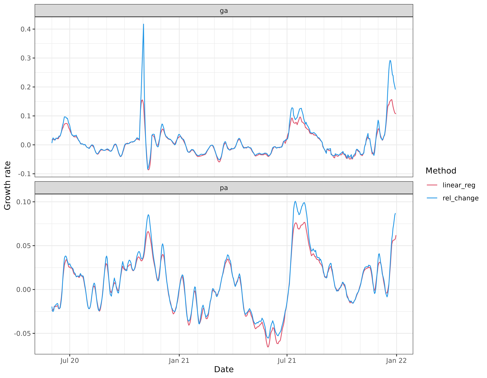
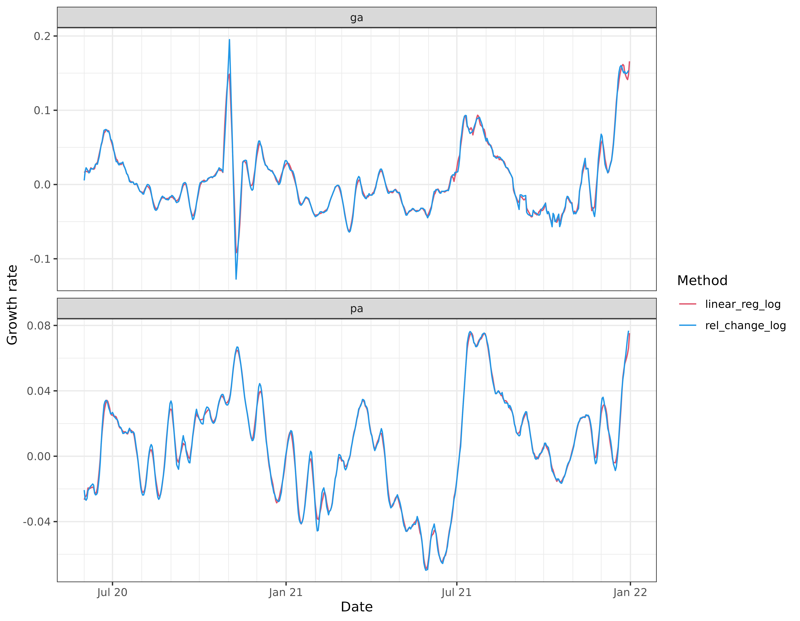
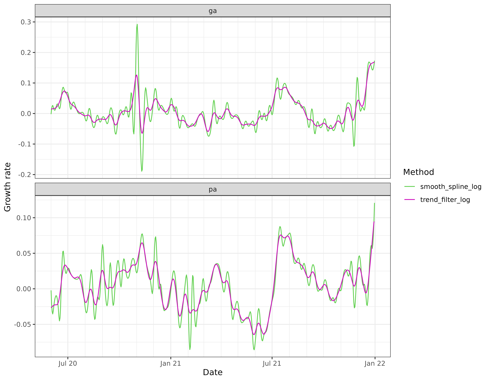

A basic way of assessing growth in a signal is to look at its
relative change over two neighboring time windows. The
epiprocess package provides a function
growth_rate() to compute such relative changes, as well as
more sophisticated estimates the growth rate of a signal. We investigate
this functionality in the current vignette, applied to state-level daily
reported COVID-19 cases from GA and PA, smoothed using a 7-day trailing
average.
The data is included in the epidatasets
package, which is loaded along with epiprocess, and can
be accessed with:
x <- cases_deaths_subset %>%
select(geo_value, time_value, cases = cases_7d_av) %>%
filter(geo_value %in% c("pa", "ga") & time_value >= "2020-06-01") %>%
arrange(geo_value, time_value)The data can also be fetched from the Delphi Epidata API with the following query:
library(epidatr)
d <- as.Date("2024-03-20")
x <- pub_covidcast(
source = "jhu-csse",
signals = "confirmed_7dav_incidence_num",
geo_type = "state",
time_type = "day",
geo_values = "ga,pa",
time_values = epirange(20200601, 20211231),
as_of = d
) %>%
select(geo_value, time_value, cases = value) %>%
arrange(geo_value, time_value) %>%
as_epi_df(as_of = d)The data has 1,158 rows and 3 columns.
Growth rate basics
The growth rate of a function defined over a continuously-valued parameter is defined as , where is the derivative of at . To estimate the growth rate of a signal in discrete-time (which can be thought of as evaluations or discretizations of an underlying function in continuous-time), we can estimate the derivative and divide by the signal value itself (or possibly a smoothed version of the signal value).
The growth_rate() function takes a sequence of
underlying design points x and corresponding sequence
y of signal values, and allows us to choose from the
following methods for estimating the growth rate at a given reference
point x0, by setting the method argument:
- “rel_change”: uses
,
where
is the average of
yover the second half of a sliding window of bandwidthhcentered at the reference pointx0, and the average over the first half. This can be seen as using a first-difference approximation to the derivative. - “linear_reg”: uses the slope from a linear regression of
yonxover a sliding window centered at the reference pointx0, divided by the fitted value from this linear regression atx0. - “smooth_spline”: uses the estimated derivative at
x0from a smoothing spline fit toxandy, viastats::smooth.spline(), divided by the fitted value of the spline atx0. - “trend_filter”: uses the estimated derivative at
x0from polynomial trend filtering (a discrete spline) fit toxandy, viatrendfilter::trendfilter(), divided by the fitted value of the discrete spline atx0.
The default in growth_rate() is x0 = x, so
that it returns an estimate of the growth rate at each underlying design
point.
Relative change
The default method is “rel_change”, which is the simplest way to
estimate growth rates. The default bandwidth is h = 7,
which for daily data, considers the relative change in a signal over
adjacent weeks. We can wrap growth_rate() in a call to
dplyr::mutate() to append a new column to our
epi_df object with the computed growth rates.
x <- x %>%
group_by(geo_value) %>%
mutate(cases_gr1 = growth_rate(cases))
head(x, 10)
#> An `epi_df` object, 10 x 4 with metadata:
#> * geo_type = state
#> * time_type = day
#> * as_of = 2024-03-20
#>
#> # A tibble: 10 × 4
#> # Groups: geo_value [1]
#> geo_value time_value cases cases_gr1
#> <chr> <date> <dbl> <dbl>
#> 1 ga 2020-06-01 643. 0.00601
#> 2 ga 2020-06-02 603. 0.0185
#> 3 ga 2020-06-03 608 0.0240
#> 4 ga 2020-06-04 656. 0.0218
#> 5 ga 2020-06-05 677. 0.0193
#> 6 ga 2020-06-06 718. 0.0163
#> # ℹ 4 more rowsWe can visualize these growth rate estimates by plotting the signal values and highlighting the periods in time for which the relative change is above 1% (in red) and below -1% (in blue), faceting by geo value.
library(ggplot2)
upper <- 0.01
lower <- -0.01
ggplot(x, aes(x = time_value, y = cases)) +
geom_tile(
data = x %>% filter(cases_gr1 >= upper),
aes(x = time_value, y = 0, width = 7, height = Inf),
fill = 2, alpha = 0.08
) +
geom_tile(
data = x %>% filter(cases_gr1 <= lower),
aes(x = time_value, y = 0, width = 7, height = Inf),
fill = 4, alpha = 0.08
) +
geom_line() +
facet_wrap(vars(geo_value), scales = "free_y") +
scale_x_date(minor_breaks = "month", date_labels = "%b %y") +
labs(x = "Date", y = "Reported COVID-19 cases")
As a more direct visualization, we plot the estimated growth rates themselves, overlaying the curves for the two states on one plot.
ggplot(x, aes(x = time_value, y = cases_gr1)) +
geom_line(aes(col = geo_value)) +
geom_hline(yintercept = upper, linetype = 2, col = 2) +
geom_hline(yintercept = lower, linetype = 2, col = 4) +
scale_color_manual(values = c(3, 6)) +
scale_x_date(minor_breaks = "month", date_labels = "%b %y") +
labs(x = "Date", y = "Growth rate", col = "State")
We can see that the estimated growth rates from the relative change method are somewhat volatile, and there appears to be some bias towards towards the right boundary of the time span—look at the estimated growth rate for Georgia in late December 2021, which takes a potentially suspicious dip. In general, estimation of derivatives will be difficult near the boundary, but relative changes can suffer from particularly noticeable boundary bias because they are based on a difference in averages over two halves of a local window, and with this simplistic approach, one of these halves will be truncated near a boundary.
Linear regression
The second simplest method available is “linear_reg”, whose default
bandwidth is again h = 7. Compared to “rel_change”, it
appears to behave similarly overall, but thankfully avoids some of the
troublesome spikes:
x <- x %>%
group_by(geo_value) %>%
mutate(cases_gr2 = growth_rate(cases, method = "linear_reg"))
x %>%
pivot_longer(
cols = starts_with("cases_gr"),
names_to = "method",
values_to = "gr"
) %>%
mutate(method = recode(method,
cases_gr1 = "rel_change",
cases_gr2 = "linear_reg"
)) %>%
ggplot(aes(x = time_value, y = gr)) +
geom_line(aes(col = method)) +
scale_color_manual(values = c(2, 4)) +
facet_wrap(vars(geo_value), scales = "free_y", ncol = 1) +
scale_x_date(minor_breaks = "month", date_labels = "%b %y") +
labs(x = "Date", y = "Growth rate", col = "Method")
Nonparametric estimation
We can also use a nonparametric method to estimate the derivative,
through “smooth_spline” or “trend_filter”. The latter is going to be
generally more computationally expensive, but it is also able to adapt
better to the local level of smoothness. (The apparent efficiency is
actually compounded by the particular implementations and default
settings for these methods: “trend_filter” is based on a sequence of
solutions provided in the trendfilter package, and performs
cross-validation by default in order to pick the level of
regularization; read the documentation for growth_rate()
for more details.)
Note: The trendfilter package is not automatically
installed with epiprocess. To install it from GitHub, you
can use pak::pkg_install("glmgen/trendfilter").
x <- x %>%
group_by(geo_value) %>%
mutate(
cases_gr3 = growth_rate(cases, method = "smooth_spline"),
cases_gr4 = growth_rate(cases, method = "trend_filter")
)
x %>%
select(geo_value, time_value, cases_gr3, cases_gr4) %>%
pivot_longer(
cols = starts_with("cases_gr"),
names_to = "method",
values_to = "gr"
) %>%
mutate(method = recode(method,
cases_gr3 = "smooth_spline",
cases_gr4 = "trend_filter"
)) %>%
ggplot(aes(x = time_value, y = gr)) +
geom_line(aes(col = method)) +
scale_color_manual(values = c(3, 6)) +
facet_wrap(vars(geo_value), scales = "free_y", ncol = 1) +
scale_x_date(minor_breaks = "month", date_labels = "%b %y") +
labs(x = "Date", y = "Growth rate", col = "Method")
In this particular example, the trend filtering estimates of growth rate appear to be much more stable than those from the smoothing spline, and also much more stable than the estimates from local relative changes and linear regressions.
The smoothing spline growth rate estimates are based on the default
settings in stats::smooth.spline(), and appear severely
under-regularized here. Any of the arguments to
stats::smooth.spline() can be customized by passing them as
additional arguments to growth_rate_params(); similarly, we
can also use additional arguments to customize the settings in the
underlying trend filtering functions
trendfilter::trendfilter(),
trendfilter::cv_trendfilter(), and the documentation for
growth_rate() gives the full details.
Log scale estimation
In general, and alternative view for the growth rate of a function
is given by defining
,
and then observing that
.
Therefore, any method that estimates the derivative can be simply
applied to the log of the signal of interest, and in this light, each
method above (“rel_change”, “linear_reg”, “smooth_spline”, and
“trend_filter”) has a log scale analog, which can be used by setting the
argument log_scale = TRUE in the call to
growth_rate().
x <- x %>%
group_by(geo_value) %>%
mutate(
cases_gr5 = growth_rate(cases, method = "rel_change", log_scale = TRUE),
cases_gr6 = growth_rate(cases, method = "linear_reg", log_scale = TRUE),
cases_gr7 = growth_rate(cases, method = "smooth_spline", log_scale = TRUE),
cases_gr8 = growth_rate(cases, method = "trend_filter", log_scale = TRUE)
)
x %>%
select(geo_value, time_value, cases_gr5, cases_gr6) %>%
pivot_longer(
cols = starts_with("cases_gr"),
names_to = "method",
values_to = "gr"
) %>%
mutate(method = recode(method,
cases_gr5 = "rel_change_log",
cases_gr6 = "linear_reg_log"
)) %>%
ggplot(aes(x = time_value, y = gr)) +
geom_line(aes(col = method)) +
scale_color_manual(values = c(2, 4)) +
facet_wrap(vars(geo_value), scales = "free_y", ncol = 1) +
scale_x_date(minor_breaks = "month", date_labels = "%b %y") +
labs(x = "Date", y = "Growth rate", col = "Method")
x %>%
select(geo_value, time_value, cases_gr7, cases_gr8) %>%
pivot_longer(
cols = starts_with("cases_gr"),
names_to = "method",
values_to = "gr"
) %>%
mutate(method = recode(method,
cases_gr7 = "smooth_spline_log",
cases_gr8 = "trend_filter_log"
)) %>%
ggplot(aes(x = time_value, y = gr)) +
geom_line(aes(col = method)) +
scale_color_manual(values = c(3, 6)) +
facet_wrap(vars(geo_value), scales = "free_y", ncol = 1) +
scale_x_date(minor_breaks = "month", date_labels = "%b %y") +
labs(x = "Date", y = "Growth rate", col = "Method")
Comparing the rel_change_log curves with their
rel_change counterparts (shown in earlier figures), we see
that the former curves appear less volatile and match the linear
regression estimates much more closely. In particular, when
rel_change has upward spikes, rel_change_log
has less pronounced spikes. Why does this occur? The estimate of
here can be expressed as
,
where
,
and the expectation refers to averaging over the
observations in each window. Consider the following two relevant
inequalities, both due to concavity of the logarithm function:
The first inequality is Jensen’s; the second inequality is because
the tangent line of a concave function lies above it. Finally, we
observe that
,
which the rel_change estimate. This explains why the
rel_change_log curve often lies below the
rel_change curve.
Attribution
This document contains a dataset that is a modified part of the COVID-19 Data Repository by the Center for Systems Science and Engineering (CSSE) at Johns Hopkins University as republished in the COVIDcast Epidata API. This data set is licensed under the terms of the Creative Commons Attribution 4.0 International license by the Johns Hopkins University on behalf of its Center for Systems Science in Engineering. Copyright Johns Hopkins University 2020.
From the COVIDcast Epidata API: These signals are taken directly from the JHU CSSE COVID-19 GitHub repository without changes.